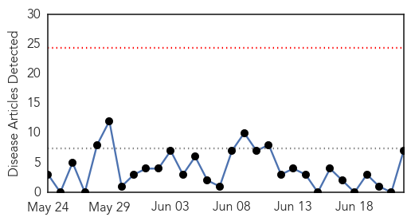
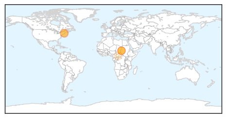

Measles
30-Day Web Trend
0 alerts, 0 warnings

30-Day Twitter Trend
1 alerts, 0 warnings

Article Locations
Article Confidences
Top Articles:
- 0.974
- Sudan facing measles outbreak with 2,500 cases nationwide: UN
- 0.966
- Sudan Cases Are 4 Times Higher Than Last Year Despite Vaccination Campaign
- 0.963
- Sudan facing measles outbreak with 2,500 cases nationwide: UN
- 0.887
- Child gets measles visiting Martha's Vineyard; second case in state
- 0.842
- Child on Martha's Vineyard Diagnosed With Measles
- 0.586
- Measles on Martha's Vineyard: Hospital releases list of places contagious child visitied
- 0.553
- Central African Republic
Top Tweets:
-
No tweets found for Jun 22, 2015
Bubonic Plague
30-Day Web Trend
1 alerts, 0 warnings

30-Day Twitter Trend
0 alerts, 0 warnings

Article Locations
Article Confidences

Top Articles:
- 0.915
- Colorado teen dies from rare case of plague
- 0.896
- Colo. teen dies from rare case of plague
- 0.863
- 160 quarantined after plague death in Kyrgyzstan
- 0.846
- Colorado boy died of plague, health officials say
- 0.833
- Colorado Teen Dies of Bubonic Plague
- 0.657
- Colo. teen dies of the plague
- 0.641
- Plague, Eradicated in Most of the World, Takes Life of Colorado Teen
- 0.586
- Colorado teen died from “The Plague”
Top Tweets:
-
No tweets found for Jun 22, 2015